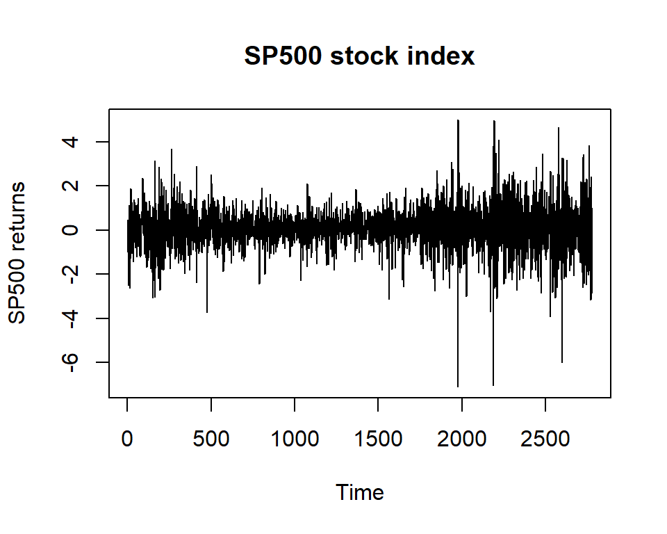
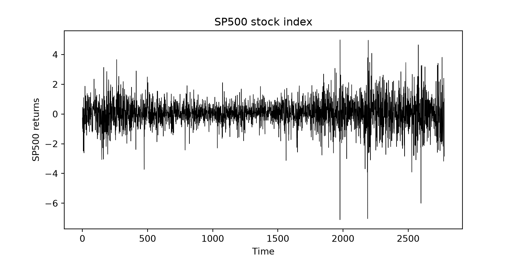
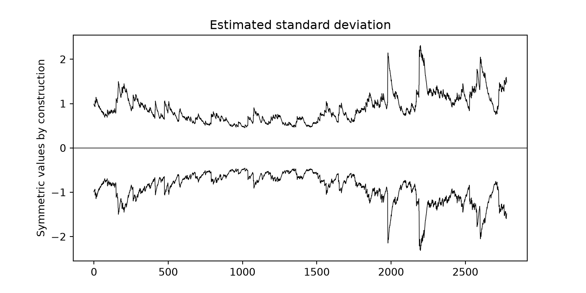
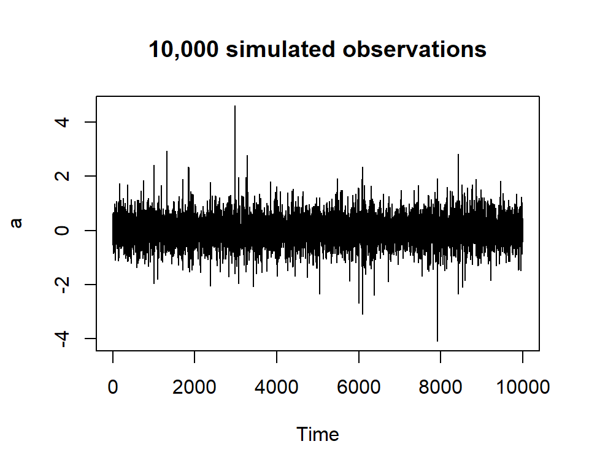
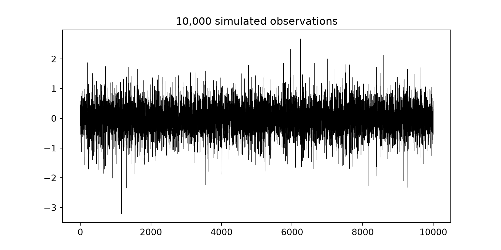
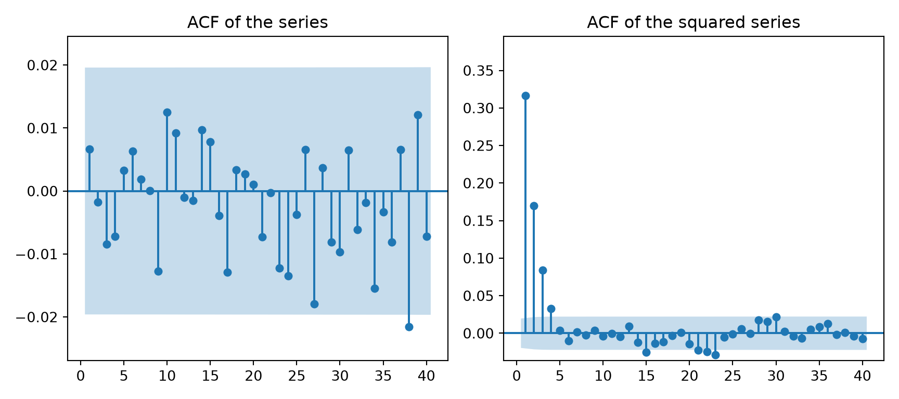
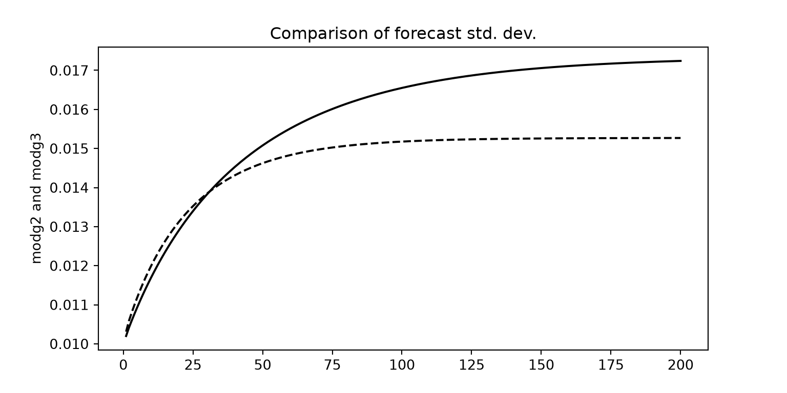
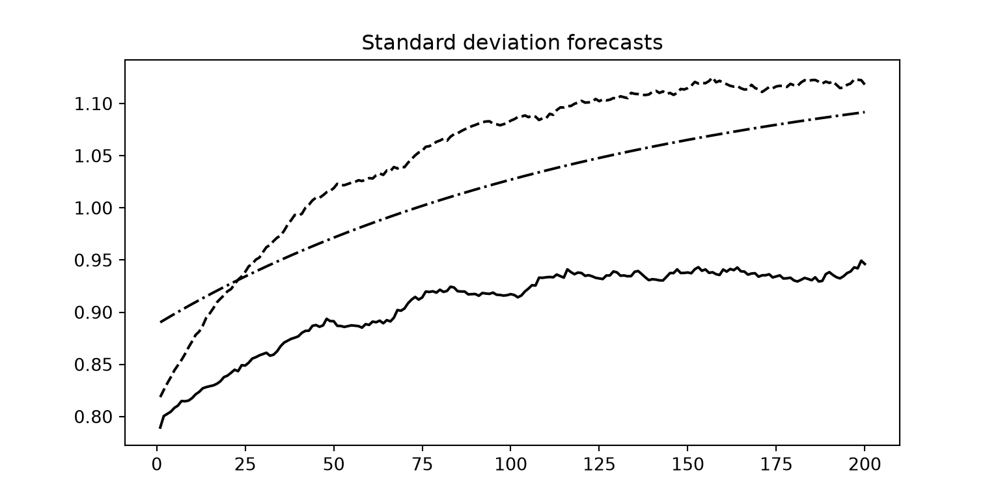

load("data/SP500.Rdata")
ts.plot(SP500, xlab="Time", ylab="SP500 returns", main="SP500 stock index")
In this book we have dealt with time series in two different chapters: the first focused on decomposition and seasonal adjustment in a so-called traditional approach, the second making wider use of modelling, particularly useful for producing forecasts with some degree of statistical reliability. So far our examples have been limited to economic time series of macroeconomic aggregates or business series such as turnover, sales, etc., but also to more typically social series, such as poverty, social exclusion, etc. However, there are types of series whose dynamics require different models.
The typical example is that of financial series, i.e. time series of assets, returns and financial-market indices. These series are characterised by a very large number of observations, since information on prices and quantities traded in financial markets is available even several times a day. Another evident feature concerns the variability of the data, which very often shows volatility clusters, i.e. periods in which the variability of the data swings, even visibly, between lower and higher values. Traditional techniques are entirely inadequate to describe these series, in which we are mainly interested for forecasting purposes. Likewise, very often there is not enough persistence in the mean to allow a convincing application of ARIMA models which, working on typically heteroskedastic series, also suffer from the lack of stationarity in variance. In fact, the very nature of financial series makes medium- and long-term assessments less important, and any reference to trend and cycle, as well as to seasonal fluctuations, loses importance, since changes in the data are driven more by contingent company information available to the market, investors’ profit expectations, risks of losses, etc., than by the production cycles of goods and services and/or by the characteristics of the economic system where supply meets demand. Indeed, in many cases it is not easy to trace the reasons for the fluctuations, since changes in value may be generated, for example, by the strategies of investors seeking to profit from price differences, or by greater or lesser confidence in a company (or a country) and its securities.
In other words, financial series very often appear naturally stationary in mean around a constant value (often zero), showing instead rapid and frequent swings above and below it. Of course the pattern depends on the type of financial product, although this description certainly matches one of the typical behaviours of return series, or rather of rates of return.
The rate of return of a financial asset summarises the flow of payments received by its holder over a specific period of time. If \(P_{t}\) is the monetary value, i.e. the price of the single asset, the gross rate of return is
\[ R_{t,t+1}=P_{t+1}/P_{t} \tag{11.1} \]
and the net rate of return
\[ r_{t,t+1}=R_{t,t+1}-1=(P_{t+1}-P_{t})/P_{t} \tag{11.2} \]
The formula is simplified, since we should account for any intermediate payments, for example dividends for shares and coupons for bonds. We defer these and other definitions to the next section. Note straight away that asset prices are in most cases recorded daily and several times a day, but the most relevant information concerns the opening price, the minimum price, the maximum price, the average price and, finally, the closing price which, in practice, summarises the final outcome of the trading day; unless otherwise stated, we implicitly refer to this daily closing price whenever, now and later, we speak of the price of an asset.
With a basket of \(N\) assets, where \(a_{t}^{n}\) is the quantity of the \(n\)-th security bought at time \(t\), we have
\[ R_{t,t+1}^{\pi}=P_{t+1}^{\pi}/P_{t}^{\pi}=\sum_{n=1}^{N} a_{t}^{n}P_{t+1}^{n}\Big/\sum_{n=1}^{N} a_{t}^{n}P_{t}^{n} \tag{11.3} \]
assuming that the composition of the basket does not change between the two times, an assumption that is realistic only over short horizons.
Similarly, prices at different times can be compared, for example between \(t\) and \(t+k\); it follows that rates for different \(k\) can be compared by means of a geometric mean
\[ R_{k,t}=\sqrt[k]{P_{t+k}/P_{t}} \tag{11.4} \]
Generalising this expression to the intermediate times leads to
\[ R_{t,t+k}=\prod_{i=1}^{k} P_{t+i}/P_{t+i-1} \tag{11.5} \]
which, linearised by taking logarithms, leads to the well-known representation of the “continuously compounded rate”.
There are other ways of representing rates of return, for example the “discount rate”, in which the increase in the value of the investment is related to the final rather than the initial value (typical of the bond market), or the “simple interest rate”, more widely used in the money market. We will not dwell on this further.
We have just referred to returns and rates of return of some financial asset as an example of time-series data of interest in this chapter. But what are the assets traded in financial markets?
Shares, for example. Shares are stakes in the capital of a company and can be traded in regulated markets, such as stock exchanges, or outside them. As a company grows, those who provide it with capital no longer have direct relations with it, and its shares are precisely listed and traded in a specific market. Shareholders can share in the company’s profits through dividends, i.e. sums the company pays to its shareholders.
Currencies and their exchange rates are other examples. Some currencies are pegged to others through fixed exchange rates, others float freely according to the rules of the market in which they are traded; note that the exchange rate between two currencies is linked to the interest rates obtainable by investing in the two currencies.
Other assets that can be traded in financial markets are commodities, i.e. some particular goods such as metals, oil and agricultural products.
States also issue securities to finance themselves, somewhat like companies issuing shares. In this case the most widely used instrument is the bond, essentially a fixed-income security. Once bought, a bond yields a capital at a future time set by a maturity date; it may or may not pay coupons (coupon-bearing bond and zero-coupon bond respectively) between purchase and maturity. It is easy to see that bonds whose maturity date is far from the purchase date offer the advantage of higher interest. In some cases interest is linked to official interest rates common to several actors, for example LIBOR or EURIBOR in the European banking context.
Other financial series of interest relate to particular indices which essentially represent the value of portfolios (baskets) of financial securities used to measure market performance; these are the so-called stock-market indices, such as MIB30, S&P500, Dow Jones, etc. Depending on which aspect of the market they aim to highlight, these indices include securities of highly capitalised companies, or technology-intensive ones, or companies expected to grow very fast but also much riskier, and so on, up to more general indices representing the reference financial markets of each country. There are also other instruments, such as derivatives, i.e. contracts based on the performance of one or more securities or of an underlying index. These topics are beyond the scope of this chapter, which focuses on autoregressive heteroskedastic models.
We have said that financial series are characterised by a variance that often changes a great deal and quickly, even over short periods. The greater the variability, the greater the volatility and the risk associated with the security (its value swings rapidly up and down and the risk of losing the capital invested increases). Having an idea of how volatility evolves, and tools for short-term forecasting, can help guide investment and divestment decisions, seeking to minimise risk and/or maximise the probability of gains, also by changing the composition of the portfolio.
We therefore need a model that works on the variance rather than on the mean persistence of the series. The problem is complicated by the fact that the distributions of these financial series very often depart from normality, or at least have very fat tails. Sometimes they are not symmetric, since negative events on a security seem to generate more volatility than positive ones. It is therefore easy to see how these features of financial series complicate the statistical assumptions and the resulting estimation.
Let us start with the simplest cases. The file SP500.Rdata contains the returns of the S&P500 stock index in the 1990s (for Python and SAS the same data are in the file sp500.csv). The index was created by Standard & Poor’s after the Second World War and tracks a basket of shares of the 500 largest US companies by market capitalisation (Figure 11.1).
import numpy as np
import pandas as pd
import matplotlib.pyplot as plt
from scipy import stats
from statsmodels.tsa.stattools import adfuller
from statsmodels.tsa.arima.model import ARIMA
from statsmodels.stats.diagnostic import acorr_ljungbox
from statsmodels.graphics.tsaplots import plot_acf, plot_pacf
from arch import arch_model # pip install arch
sp500 = pd.read_csv("data/sp500.csv", sep=";", decimal=",")["rendimento"]
plt.figure(figsize=(8, 4))
plt.plot(sp500.to_numpy(), color="black", linewidth=0.5)
plt.title("SP500 stock index"); plt.xlabel("Time"); plt.ylabel("SP500 returns")
plt.show()
Figure 11.1 shows the series of the index; it is interesting to note that the data move around zero (with a slight prevalence of positive values), with evident periods of larger and smaller fluctuations
Figure 11.2 shows the corresponding ACF and PACF correlograms
Note that (as always by default in R) the correlogram of the autocorrelation function shows (pointlessly) lag 0, whose value of 1 makes the subsequent lags hard to see. In any case, the series is clearly stationary in mean and, likewise, there are no signs in favour of any particular ARIMA specification
For convenience, the ADF test is run here with the adf.test() command of the tseries package (needed for the heteroskedastic models that follow), which adds lags up to order 14 and rejects the null hypothesis of a unit root for the SP500 series.
The following estimates of an ARIMA(0,0,1) and an ARIMA(1,0,0) give an idea of how hard it is to find a suitable model
Call:
arima(x = SP500, order = c(0, 0, 1))
Coefficients:
ma1 intercept
0.0175 0.0458
s.e. 0.0195 0.0183
sigma^2 estimated as 0.8976: log likelihood = -3794.55, aic = 7595.1
Call:
arima(x = SP500, order = c(1, 0, 0))
Coefficients:
ar1 intercept
0.0166 0.0458
s.e. 0.0190 0.0183
sigma^2 estimated as 0.8977: log likelihood = -3794.57, aic = 7595.14(0, 0, 1)
==============================================================================
coef std err z P>|z| [0.025 0.975]
------------------------------------------------------------------------------
const 0.0457 0.019 2.445 0.015 0.009 0.082
ma.L1 0.0175 0.012 1.412 0.158 -0.007 0.042
sigma2 0.8976 0.013 67.738 0.000 0.872 0.924
==============================================================================
(1, 0, 0)
==============================================================================
coef std err z P>|z| [0.025 0.975]
------------------------------------------------------------------------------
const 0.0457 0.019 2.443 0.015 0.009 0.082
ar.L1 0.0166 0.012 1.344 0.179 -0.008 0.041
sigma2 0.8976 0.013 67.716 0.000 0.872 0.924
==============================================================================Both specifications perform poorly even with higher orders (not reported for brevity) of the autoregressive and moving-average components, separately or jointly, although a high order slightly improves (at the cost of harder numerical convergence of the algorithm and many non-significant estimates) the Ljung-Box statistics for the null hypothesis of no serial autocorrelation over a long horizon.
Such poor results are common with financial return series. In essence, these series behave like failed white noise, with very low persistence and serial dependence, hardly captured by ARIMA models, but with a latent disturbance that shows up as non-constant variance. Since ARIMA models do not deal directly with volatility, we need a particular specification.
Suppose that \(\varepsilon\) is the residual component of an ARIMA model applied to the financial series \(y\), which has a typical volatility problem, i.e. \(y_{t}=f(arima)+\varepsilon_{t}\).
\(\varepsilon_{t}\) will then be heteroskedastic, with zero mean; let us reasonably assume that it can be written as
\[ \varepsilon_{t}=u_{t}\sqrt{h_{t}} \tag{11.6} \]
where \(u_{t}\) is a process with zero mean and unit variance (a statistically “clean” component, normal in the best case) and \(h_{t}\) a specific sequence, independent of \(u_{t}\), from which the heteroskedasticity observed in \(\varepsilon_{t}\) derives; the sequence is stochastic (the most interesting case, although strictly speaking it could also be deterministic).
From the definition of variance it follows that
\[ V(\varepsilon_{t})=E(\varepsilon_{t}^{2})=E(u_{t}^{2}h_{t})=E(u_{t}^{2})E(h_{t})=E(h_{t}) \tag{11.7} \]
At this point the literature identifies specific formulations for \(h_{t}\), namely
\[ h_{t}=a_{0}+a_{1}\varepsilon_{t-1}^{2}+v_{t} \tag{11.8} \]
where, in the simplest case, \(v_{t}\) is a Gaussian white-noise process with zero mean and unit variance.
Expression (11.8) is called ARCH(1), i.e. an autoregressive heteroskedastic model with a single lag of the squared residuals. The generalisation to ARCH(\(p\)) is immediate
\[ h_{t}=a_{0}+a_{1}\varepsilon_{t-1}^{2}+a_{2}\varepsilon_{t-2}^{2}+\cdots +a_{p}\varepsilon_{t-p}^{2}+v_{t} \tag{11.9} \]
The similarity with the ARIMA approach discussed in the previous chapters is apparent; its logic of model specification, as well as the search for the optimal order and the analysis of the residual component, can also be applied to these models.
Note that the ARCH formulation clearly establishes a relationship of temporal persistence in the variance
\[ \begin{gathered}E(h_{t})=a_{0}+a_{1}E(\varepsilon_{t-1}^{2})+a_{2}E(\varepsilon_{t-2}^{2})+\cdots +a_{p}E(\varepsilon_{t-p}^{2}) \\ \text{or} \\ E(h_{t})=V(\varepsilon_{t})=a_{0}+a_{1}V(\varepsilon_{t-1})+a_{2}V(\varepsilon_{t-2})+\cdots +a_{p}V(\varepsilon_{t-p})\end{gathered} \tag{11.10} \]
and, since the variance cannot be negative, the estimates of the coefficients \(a\) cannot be smaller than 0; similarly (except for the constant) the estimates of the coefficients \(a\) (and their sum) must not exceed one, to ensure stationarity of the process.
To avoid evaluating many ARCH specifications, even of high order, a generalisation was introduced that very often improves the model already at very low orders
\[ h_{t}=a_{0}+a_{1}\varepsilon_{t-1}^{2}+b_{1}h_{t-1}+v_{t} \tag{11.11} \]
With formulation (11.11) the model is called GARCH of order 1,1, i.e. GARCH(1,1), where the first number in brackets refers to the number of lags of \(h_{t}\) and the second to the lags of \(\varepsilon_{t}^{2}\); more generally we can write GARCH(\(q\),\(p\)), and here too the coefficient estimates (except the constant) must lie between 0 and 1 and their sum must be less than one.
It should be said at once that, for most financial series of interest, the first-order specification in formula (11.11) is more than enough to estimate \(\sigma_{t}^{2}\) adequately and provide a short-term forecast.
Let us return to the SP500 series. We accept that we have not been able to find a suitable ARIMA model, given the weak serial dependence of the returns. Hence, rather than working on the residuals of an ARIMA model (which does not exist), we can work directly on the SP500 series as if it were the series \(\varepsilon_{t}\) above. We are therefore interested in the variance of the Standard & Poor’s index and hence in specifying a GARCH model. First, to comply with the principle that the process should have zero mean, we subtract the mean of the series
With
we show the departure from normality (the Jarque-Bera test is based on measures of skewness and kurtosis), while Figure 11.3 shows the density of the series
Moving to the squares we obtain the ACF in Figure 11.4 (we have removed lag 0 for a better display)
The statistical significance of the autocorrelation of \(\varepsilon_{t}^{2}\) (in our case the squared SP500 index) indicates that a GARCH estimate is worthwhile
We used the default command of the tseries package, telling R not to print the computational trace (useful only to check for computational difficulties in the estimation), and we dropped the first residual, where values are obviously missing. Without indications on the order from the user, R fits a typical GARCH(1,1) specification, which generally gives very good estimates
Call:
garch(x = SP500, trace = F)
Model:
GARCH(1,1)
Residuals:
Min 1Q Median 3Q Max
-6.94388 -0.48913 0.05503 0.65557 4.14351
Coefficient(s):
Estimate Std. Error t value Pr(>|t|)
a0 0.004292 0.001082 3.968 7.25e-05 ***
a1 0.050054 0.004480 11.173 < 2e-16 ***
b1 0.946773 0.004801 197.217 < 2e-16 ***
---
Signif. codes: 0 '***' 0.001 '**' 0.01 '*' 0.05 '.' 0.1 ' ' 1
Diagnostic Tests:
Jarque Bera Test
data: Residuals
X-squared = 786.13, df = 2, p-value < 2.2e-16
Box-Ljung test
data: Squared.Residuals
X-squared = 0.63584, df = 1, p-value = 0.4252 Zero Mean - GARCH Model Results
==============================================================================
Dep. Variable: rendimento R-squared: 0.000
Mean Model: Zero Mean Adj. R-squared: 0.000
Vol Model: GARCH Log-Likelihood: -3487.28
Distribution: Normal AIC: 6980.57
Method: Maximum Likelihood BIC: 6998.36
No. Observations: 2780
Date: dom, nov 01 2026 Df Residuals: 2780
Time: 11:48:43 Df Model: 0
Volatility Model
=============================================================================
coef std err t P>|t| 95.0% Conf. Int.
-----------------------------------------------------------------------------
omega 4.3180e-03 2.589e-03 1.668 9.533e-02 [-7.561e-04,9.392e-03]
alpha[1] 0.0502 1.374e-02 3.652 2.605e-04 [2.324e-02,7.710e-02]
beta[1] 0.9466 1.475e-02 64.197 0.000 [ 0.918, 0.976]
=============================================================================
Covariance estimator: robustJarque-Bera on residuals: 782.55 p-value = 1.177572942973406e-170Ljung-Box on squared residuals:
lb_stat lb_pvalue
1 0.578195 0.447021Note the strong significance of the estimates and the automatic inclusion of two tests: the Jarque-Bera normality test (rejected) on the residuals of the GARCH(1,1) model and the Ljung-Box test of no serial autocorrelation (accepted) on the squared residuals of the same model. In essence, with the caution due to non-normal residuals, the current specification captures the dependence in the variance of the SP500 return series; indeed, the squared residuals of the GARCH model no longer show significant serial autocorrelation (Figure 11.5)
The next command produces Figure 11.6, which shows the estimated variability of the SP500 returns (precisely, the function returns the standard deviation, i.e. the square root of the variance, with positive and negative sign)
sd_sp = sp_garch.conditional_volatility.to_numpy()
plt.figure(figsize=(8, 4))
plt.plot(sd_sp, color="black", linewidth=0.6); plt.plot(-sd_sp, color="black", linewidth=0.6)
plt.axhline(0, color="black", linewidth=0.6)
plt.title("Estimated standard deviation"); plt.ylabel("Symmetric values by construction")
plt.show()
data spgarch;
set spgarch;
t = _n_;
sd = sqrt(varianza); msd = -sd;
run;
proc sgplot data=spgarch noautolegend;
title "Estimated standard deviation";
series x=t y=sd / lineattrs=(color=black);
series x=t y=msd / lineattrs=(color=black);
refline 0 / axis=y;
yaxis label="Symmetric values by construction";
run;Note that, by construction, negative and positive return swings are not treated differently; clearly the pattern of the variance is identical and mirrored, so it would be enough to show only the upper panel (Figure 11.7)
The graph shows a progressive increase in volatility in the last part of the series and therefore signals a generally higher financial risk for the market under study; a specific analysis could be carried out for particular investment portfolios and/or selected assets.
Let us work through another example, this time with 10,000 data points simulated from a GARCH(1,1) with the constant \(a_{0}\) set to 0.1, the coefficient \(a_{1}\) to 0.4 and \(b_{1}\) to 0.2
The series to be modelled is therefore stored in the object a, shown in Figure 11.8, while Figure 11.9 shows the ACF of the series itself and of its squares



The ACF of the squares shows what we expected: persistence in the variance. We estimate the model
Call:
garch(x = a, order = c(1, 1), trace = F)
Model:
GARCH(1,1)
Residuals:
Min 1Q Median 3Q Max
-3.84902 -0.66921 -0.01108 0.67441 3.85447
Coefficient(s):
Estimate Std. Error t value Pr(>|t|)
a0 0.09920 0.00512 19.376 < 2e-16 ***
a1 0.40093 0.01811 22.136 < 2e-16 ***
b1 0.20113 0.02523 7.972 1.55e-15 ***
---
Signif. codes: 0 '***' 0.001 '**' 0.01 '*' 0.05 '.' 0.1 ' ' 1
Diagnostic Tests:
Jarque Bera Test
data: Residuals
X-squared = 0.15898, df = 2, p-value = 0.9236
Box-Ljung test
data: Squared.Residuals
X-squared = 0.042645, df = 1, p-value = 0.8364 Zero Mean - GARCH Model Results
==============================================================================
Dep. Variable: y R-squared: 0.000
Mean Model: Zero Mean Adj. R-squared: 0.000
Vol Model: GARCH Log-Likelihood: -6404.54
Distribution: Normal AIC: 12815.1
Method: Maximum Likelihood BIC: 12836.7
No. Observations: 10000
Date: dom, nov 01 2026 Df Residuals: 10000
Time: 11:48:46 Df Model: 0
Volatility Model
==========================================================================
coef std err t P>|t| 95.0% Conf. Int.
--------------------------------------------------------------------------
omega 0.1030 4.639e-03 22.202 3.290e-109 [9.389e-02, 0.112]
alpha[1] 0.3958 1.817e-02 21.790 2.917e-105 [ 0.360, 0.431]
beta[1] 0.1837 2.269e-02 8.096 5.664e-16 [ 0.139, 0.228]
==========================================================================
Covariance estimator: robustJarque-Bera on residuals: 3.605 p-value = 0.1649Ljung-Box on squared residuals:
lb_stat lb_pvalue
1 0.002701 0.958548In this case (it could not be otherwise) the Jarque-Bera test suggests accepting the null hypothesis of normal residuals and, of course, the test on the squared residuals confirms that the persistence of the variance has been fully captured by the specified model; the variance (more precisely the standard deviation) is shown in Figure 11.10 and, unlike the SP500 index, it shows no systematic drift towards higher or lower volatility over time
Note that with a seed different from the one set with the set.seed() function, or with a different random-number generator (as happens when moving from R to Python or SAS), slightly different estimates would be obtained; the issue is entirely marginal here.
The garch() command of the tseries package uses a quasi-Newton procedure to obtain the maximum likelihood estimates of the model, but it should be regarded as a basic command, with a very intuitive syntax, producing only the main estimation results; it is sufficient in the simplest cases. However, unlike other economic series, financial series often show dynamics that require a more complex specification than the basic GARCH and/or the removal of the assumptions of normality and symmetry of the error component. This makes computation considerably more complex and other packages are needed. In particular, here we use fGarch, because its syntax is similar to that of tseries and it allows GARCH models to be estimated with sufficient flexibility. In Python we use the arch library, in SAS the PROC AUTOREG procedure.
We load the file bmw.Rdata (for Python and SAS bmw.csv), which contains a series of daily returns of BMW shares, and apply the garchFit() function of the fGarch package to estimate a GARCH(1,1) without the computational trace
Title:
GARCH Modelling
Call:
garchFit(formula = ~garch(1, 1), data = bmw, trace = F)
Mean and Variance Equation:
data ~ garch(1, 1)
<environment: 0x0000023d0da6c7e0>
[data = bmw]
Conditional Distribution:
norm
Coefficient(s):
mu omega alpha1 beta1
4.3240e-04 8.2830e-06 9.7528e-02 8.6705e-01
Std. Errors:
based on Hessian
Error Analysis:
Estimate Std. Error t value Pr(>|t|)
mu 4.324e-04 1.599e-04 2.704 0.00685 **
omega 8.283e-06 1.373e-06 6.034 1.6e-09 ***
alpha1 9.753e-02 1.106e-02 8.819 < 2e-16 ***
beta1 8.671e-01 1.520e-02 57.035 < 2e-16 ***
---
Signif. codes: 0 '***' 0.001 '**' 0.01 '*' 0.05 '.' 0.1 ' ' 1
Log Likelihood:
17728.45 normalized: 2.884551
Description:
Sun Nov 1 11:48:48 2026 by user: erasm_3ln72t4
Standardised Residuals Tests:
Statistic p-Value
Jarque-Bera Test R Chi^2 12098.210113 0.000000e+00
Shapiro-Wilk Test R W NA NA
Ljung-Box Test R Q(10) 66.357185 2.227616e-10
Ljung-Box Test R Q(15) 70.788489 3.231528e-09
Ljung-Box Test R Q(20) 80.910628 2.748710e-09
Ljung-Box Test R^2 Q(10) 5.273152 8.722002e-01
Ljung-Box Test R^2 Q(15) 7.219016 9.512847e-01
Ljung-Box Test R^2 Q(20) 9.171954 9.808287e-01
LM Arch Test R TR^2 5.966413 9.177657e-01
Information Criterion Statistics:
AIC BIC SIC HQIC
-5.767801 -5.763425 -5.767802 -5.766283 # arch works better with percentage returns: the estimates of mu are
# multiplied by 100 and that of omega by 10,000 compared with fGarch
bmw = pd.read_csv("data/bmw.csv", sep=";", decimal=",",
index_col="data", parse_dates=True)["rendimento"] * 100
modg = arch_model(bmw, mean="Constant", vol="GARCH", p=1, q=1).fit(disp="off")
print(modg.summary()) Constant Mean - GARCH Model Results
==============================================================================
Dep. Variable: rendimento R-squared: 0.000
Mean Model: Constant Mean Adj. R-squared: 0.000
Vol Model: GARCH Log-Likelihood: -10572.7
Distribution: Normal AIC: 21153.4
Method: Maximum Likelihood BIC: 21180.3
No. Observations: 6146
Date: dom, nov 01 2026 Df Residuals: 6145
Time: 11:48:48 Df Model: 1
Mean Model
============================================================================
coef std err t P>|t| 95.0% Conf. Int.
----------------------------------------------------------------------------
mu 0.0429 1.725e-02 2.489 1.283e-02 [9.118e-03,7.673e-02]
Volatility Model
==========================================================================
coef std err t P>|t| 95.0% Conf. Int.
--------------------------------------------------------------------------
omega 0.0819 3.959e-02 2.069 3.857e-02 [4.308e-03, 0.160]
alpha[1] 0.0966 3.320e-02 2.910 3.610e-03 [3.155e-02, 0.162]
beta[1] 0.8682 4.591e-02 18.912 9.131e-80 [ 0.778, 0.958]
==========================================================================
Covariance estimator: robustIt is interesting to note that the function expects not only a model for the variance of the BMW series but also a model for the mean, i.e. an ARMA form (ARIMA is excluded). In other words, this function can estimate any ARMA form jointly with the GARCH specification, without needing two separate procedures.
In essence, for an AR(1)+GARCH(1,1) we have a process such that
\[ y_{t}=c+\phi_{1}y_{t-1}+\varepsilon_{t} \quad \text{where} \quad \varepsilon_{t}=u_{t}\sqrt{h_{t}} \tag{11.12} \]
with \(u_{t}\sim N(0,1)\), \(h_{t}=a_{0}+a_{1}\varepsilon_{t-1}^{2}+b_{1}h_{t-1}+v_{t}\) and \(v_{t}\sim WN\).
In the simplest case \(v_{t}\) is normal (0,1). Actually, in terms of a joint specification of the models for the mean and for the variance, to be understood as
\[ y_{t}=c+\phi_{1}y_{t-1}+\varepsilon_{t}=c+\phi_{1}y_{t-1}+u_{t}\sqrt{a_{0}+a_{1}\varepsilon_{t-1}^{2}+b_{1}h_{t-1}} \tag{11.13} \]
there is no need to refer to two distinct processes \(u_{t}\) and \(v_{t}\): only the process \(u_{t}\) need be considered, now more generally as a white-noise process independent of \(h_{t}\), and normal only as a special case; clearly the standardised residual is \(u_{t}=\varepsilon_{t}/\sqrt{h_{t}}\).
The generalisation to larger specifications is straightforward. Conversely, the absence of a model for the mean is equivalent to setting \(\phi_{1}=0\), so the specification reduces to the model \(y_{t}=c+\varepsilon_{t}\), or \(y_{t}=\varepsilon_{t}\) if \(c=0\), with the usual \(\varepsilon_{t}=u_{t}\sqrt{h_{t}}\).
In the R example, the estimate of \(c\) corresponds to mu and that of \(a_{0}\) to omega; for \(a_{1}\) we have alpha1 and for \(b_{1}\) beta1, while norm means that the white-noise process is assumed Gaussian. Note that, unlike common usage in the literature and in other R packages, the garch(1,1) syntax of garchFit assigns the first order to the ARCH part and the second to the GARCH part; in other words, an ARCH(1) corresponds here to the syntax garch(1,0) and not the other way round.
We discuss the rest of the output on a new estimate, which now includes the autoregressive term in the mean equation
Title:
GARCH Modelling
Call:
garchFit(formula = ~arma(1, 0) + garch(1, 1), data = bmw, cond.dist = "norm",
trace = F)
Mean and Variance Equation:
data ~ arma(1, 0) + garch(1, 1)
<environment: 0x0000023d09053ba0>
[data = bmw]
Conditional Distribution:
norm
Coefficient(s):
mu ar1 omega alpha1 beta1
4.0092e-04 9.8596e-02 8.9043e-06 1.0210e-01 8.5944e-01
Std. Errors:
based on Hessian
Error Analysis:
Estimate Std. Error t value Pr(>|t|)
mu 4.009e-04 1.579e-04 2.539 0.0111 *
ar1 9.860e-02 1.431e-02 6.888 5.65e-12 ***
omega 8.904e-06 1.449e-06 6.145 7.97e-10 ***
alpha1 1.021e-01 1.135e-02 8.994 < 2e-16 ***
beta1 8.594e-01 1.581e-02 54.348 < 2e-16 ***
---
Signif. codes: 0 '***' 0.001 '**' 0.01 '*' 0.05 '.' 0.1 ' ' 1
Log Likelihood:
17757.16 normalized: 2.889222
Description:
Sun Nov 1 11:48:48 2026 by user: erasm_3ln72t4
Standardised Residuals Tests:
Statistic p-Value
Jarque-Bera Test R Chi^2 11377.994533 0.00000000
Shapiro-Wilk Test R W NA NA
Ljung-Box Test R Q(10) 15.156925 0.12644454
Ljung-Box Test R Q(15) 20.093450 0.16837705
Ljung-Box Test R Q(20) 30.547881 0.06144918
Ljung-Box Test R^2 Q(10) 5.032718 0.88898175
Ljung-Box Test R^2 Q(15) 7.539273 0.94092453
Ljung-Box Test R^2 Q(20) 9.277229 0.97946811
LM Arch Test R TR^2 6.032540 0.91443284
Information Criterion Statistics:
AIC BIC SIC HQIC
-5.776818 -5.771348 -5.776819 -5.774920 AR - GARCH Model Results
==============================================================================
Dep. Variable: rendimento R-squared: 0.006
Mean Model: AR Adj. R-squared: 0.006
Vol Model: GARCH Log-Likelihood: -10544.9
Distribution: Normal AIC: 21099.9
Method: Maximum Likelihood BIC: 21133.5
No. Observations: 6145
Date: dom, nov 01 2026 Df Residuals: 6143
Time: 11:48:48 Df Model: 2
Mean Model
===============================================================================
coef std err t P>|t| 95.0% Conf. Int.
-------------------------------------------------------------------------------
Const 0.0401 1.664e-02 2.411 1.590e-02 [7.509e-03,7.273e-02]
rendimento[1] 0.0983 1.551e-02 6.337 2.345e-10 [6.787e-02, 0.129]
Volatility Model
==========================================================================
coef std err t P>|t| 95.0% Conf. Int.
--------------------------------------------------------------------------
omega 0.0866 4.144e-02 2.091 3.656e-02 [5.414e-03, 0.168]
alpha[1] 0.1004 3.370e-02 2.980 2.884e-03 [3.437e-02, 0.166]
beta[1] 0.8621 4.723e-02 18.251 2.047e-74 [ 0.769, 0.955]
==========================================================================
Covariance estimator: robustNote the additional coefficient ar1, i.e. the estimate of \(\phi_{1}\). Of course, before specifying any ARMA model we must carry out the usual preliminary analyses, not reported here for brevity; likewise, should differencing be needed, it must be done before specifying and estimating the model.
The output also lists some model-selection criteria: besides the classical AIC and BIC we find the less used SIC (another Schwarz criterion, not to be confused with BIC) and HQIC (Hannan-Quinn information criterion); the values are normalised, i.e. divided by the number of observations. The log-likelihood is also shown with and without normalisation.
The R output also includes some useful statistical tests on the standardised residuals and on the squared residuals. The Jarque-Bera test rejects the hypothesis of normality of the white-noise innovation process (essentially \(u_{t}\)), while the Ljung-Box test, both on the residuals and on the squared residuals at the various lags, accepts the null hypothesis of no serial autocorrelation; Engle’s LM-ARCH test points in the same direction. In conclusion, the model seems to describe the features of the BMW series well, much better than the previous version which, without the AR(1) filter, as shown by the different conclusion of the Ljung-Box tests on the residuals, and regardless of the dependence in variance, did not adequately capture the serial dependence in mean.
The next command produces Figure 11.11, which shows the estimated standard deviation according to the last specification analysed
while the following command produces the qq-plot of the standardised residuals (Figure 11.12), which clearly shows the departure from normality, especially in the (heavier) tails
So the critical point about the distribution of the errors remains. Since fGarch allows it to be changed, we try a (standardised) Student t and, as an example, we extend the specification by adding an MA component (of course, the presence of the various components should be assessed beforehand with the usual procedures)
Title:
GARCH Modelling
Call:
garchFit(formula = ~arma(1, 1) + garch(1, 1), data = bmw, cond.dist = "std",
trace = F)
Mean and Variance Equation:
data ~ arma(1, 1) + garch(1, 1)
<environment: 0x0000023d6ab70ab8>
[data = bmw]
Conditional Distribution:
std
Coefficient(s):
mu ar1 ma1 omega alpha1 beta1
1.7358e-04 -2.9869e-01 3.6896e-01 6.0525e-06 9.2924e-02 8.8687e-01
shape
4.0461e+00
Std. Errors:
based on Hessian
Error Analysis:
Estimate Std. Error t value Pr(>|t|)
mu 1.736e-04 1.855e-04 0.936 0.34928
ar1 -2.987e-01 1.370e-01 -2.180 0.02924 *
ma1 3.690e-01 1.345e-01 2.743 0.00608 **
omega 6.053e-06 1.344e-06 4.502 6.72e-06 ***
alpha1 9.292e-02 1.312e-02 7.080 1.44e-12 ***
beta1 8.869e-01 1.542e-02 57.529 < 2e-16 ***
shape 4.046e+00 2.315e-01 17.480 < 2e-16 ***
---
Signif. codes: 0 '***' 0.001 '**' 0.01 '*' 0.05 '.' 0.1 ' ' 1
Log Likelihood:
18159.38 normalized: 2.954666
Description:
Sun Nov 1 11:48:50 2026 by user: erasm_3ln72t4
Standardised Residuals Tests:
Statistic p-Value
Jarque-Bera Test R Chi^2 13355.072329 0.00000000
Shapiro-Wilk Test R W NA NA
Ljung-Box Test R Q(10) 21.932468 0.01545235
Ljung-Box Test R Q(15) 26.500753 0.03307734
Ljung-Box Test R Q(20) 36.789790 0.01239980
Ljung-Box Test R^2 Q(10) 5.828532 0.82945752
Ljung-Box Test R^2 Q(15) 8.090680 0.92009577
Ljung-Box Test R^2 Q(20) 10.733046 0.95285376
LM Arch Test R TR^2 7.009050 0.85701494
Information Criterion Statistics:
AIC BIC SIC HQIC
-5.907054 -5.899396 -5.907056 -5.904398 AR - GARCH Model Results
====================================================================================
Dep. Variable: rendimento R-squared: 0.006
Mean Model: AR Adj. R-squared: 0.006
Vol Model: GARCH Log-Likelihood: -10146.1
Distribution: Standardized Student's t AIC: 20304.2
Method: Maximum Likelihood BIC: 20344.6
No. Observations: 6145
Date: dom, nov 01 2026 Df Residuals: 6143
Time: 11:48:50 Df Model: 2
Mean Model
================================================================================
coef std err t P>|t| 95.0% Conf. Int.
--------------------------------------------------------------------------------
Const 0.0123 1.331e-02 0.925 0.355 [-1.378e-02,3.840e-02]
rendimento[1] 0.0640 1.293e-02 4.954 7.259e-07 [3.871e-02,8.939e-02]
Volatility Model
============================================================================
coef std err t P>|t| 95.0% Conf. Int.
----------------------------------------------------------------------------
omega 0.0595 1.873e-02 3.175 1.498e-03 [2.276e-02,9.620e-02]
alpha[1] 0.0924 1.870e-02 4.942 7.739e-07 [5.577e-02, 0.129]
beta[1] 0.8877 2.318e-02 38.289 0.000 [ 0.842, 0.933]
Distribution
========================================================================
coef std err t P>|t| 95.0% Conf. Int.
------------------------------------------------------------------------
nu 4.0618 0.239 16.960 1.616e-64 [ 3.592, 4.531]
========================================================================
Covariance estimator: robustIt is interesting to note that the Ljung-Box test now rejects the null hypothesis of no autocorrelation of the residuals; however, the p-values are not very low, but relatively close to the classical 0.05 threshold. Among the estimates (worth comparing across the various models, also to highlight some changes in sign and size) note the additional shape parameter of the distribution, shape, with a significant value of 4.046.
The plot of the variance (numerically the standard deviation) of modg3 in Figure 11.13 cannot be distinguished from the variability estimated by the previous model modg2 (Figure 11.11)
Finally, the next command provides a forecast of the mean (obviously practically zero) and, above all, of the standard deviation, which shows an increasing pattern
meanForecast meanError standardDeviation
1 0.000288 0.010262 0.010262
2 0.000088 0.010476 0.010451
3 0.000147 0.010661 0.010634
4 0.000130 0.010837 0.010809
5 0.000135 0.011007 0.010979
6 0.000133 0.011171 0.011142
7 0.000134 0.011330 0.011300
8 0.000134 0.011483 0.011453
9 0.000134 0.011631 0.011600
10 0.000134 0.011774 0.011743
11 0.000134 0.011913 0.011882
12 0.000134 0.012047 0.012015
13 0.000134 0.012177 0.012145
14 0.000134 0.012304 0.012271
15 0.000134 0.012426 0.012393
16 0.000134 0.012545 0.012512
17 0.000134 0.012660 0.012627
18 0.000134 0.012772 0.012738
19 0.000134 0.012881 0.012847
20 0.000134 0.012987 0.012952 meanForecast standardDeviation
1 0.000123 0.010199
2 0.000131 0.010408
3 0.000131 0.010591
4 0.000132 0.010766
5 0.000132 0.010935
6 0.000132 0.011099
7 0.000132 0.011256
8 0.000132 0.011409
9 0.000132 0.011556
10 0.000132 0.011699
11 0.000132 0.011838
12 0.000132 0.011972
13 0.000132 0.012102
14 0.000132 0.012228
15 0.000132 0.012350
16 0.000132 0.012469
17 0.000132 0.012584
18 0.000132 0.012696
19 0.000132 0.012804
20 0.000132 0.012910/* 20 periods with missing return are appended: for them
PROC AUTOREG computes forecasts of the mean and of the variance */
data bmwprev;
set bmw end=fine;
output;
if fine then do i = 1 to 20;
rendimento = .; output;
end;
drop i;
run;
proc autoreg data=bmwprev noprint;
model rendimento = / nlag=1 garch=(p=1, q=1) dist=t;
output out=prev20 p=meanForecast cev=varianza;
run;
data prev20;
set prev20;
if rendimento = .;
standardDeviation = sqrt(varianza);
run;
proc print data=prev20; var meanForecast standardDeviation; run;In this regard, Figure 11.14 compares the 200-day forecasts of the standard deviation for models modg3 (solid line) and modg2 (dashed line)
sd3 = np.sqrt(modg3.forecast(horizon=200, reindex=False).variance.iloc[0].to_numpy()) / 100
sd2 = np.sqrt(modg2.forecast(horizon=200, reindex=False).variance.iloc[0].to_numpy()) / 100
plt.figure(figsize=(8, 4))
plt.plot(range(1, 201), sd3, color="black")
plt.plot(range(1, 201), sd2, color="black", linestyle="--")
plt.title("Comparison of forecast std. dev."); plt.ylabel("modg2 and modg3")
plt.show()
/* same scheme as the previous block with 200 additional periods,
estimating the two models (normal and t) and merging the forecasts */
data bmwprev;
set bmw end=fine;
output;
if fine then do i = 1 to 200;
rendimento = .; output;
end;
drop i;
run;
proc autoreg data=bmwprev noprint;
model rendimento = / nlag=1 garch=(p=1, q=1) dist=t;
output out=p3 cev=v3;
run;
proc autoreg data=bmwprev noprint;
model rendimento = / nlag=1 garch=(p=1, q=1);
output out=p2 cev=v2;
run;
data confronto;
merge p3(keep=rendimento v3) p2(keep=v2);
if rendimento = .;
h + 1;
sd3 = sqrt(v3); sd2 = sqrt(v2);
run;
proc sgplot data=confronto;
title "Comparison of forecast std. dev.";
series x=h y=sd3 / legendlabel="modg3";
series x=h y=sd2 / legendlabel="modg2" lineattrs=(pattern=dash);
run;We will not go further into this.
We have worked through some GARCH applications with and without an ARMA component, with and without the normality assumption; in particular, we assumed a (standardised) Student t distribution to account for fatter tails. However, other distributions can be assumed, such as a skew normal, a skewed Student t or a GED (generalized error distribution), with or without skewness.
The following command estimates the GARCH(1,1) with a skew normal (for simplicity we have omitted the ARMA component)
Title:
GARCH Modelling
Call:
garchFit(formula = ~garch(1, 1), data = bmw, cond.dist = "snorm",
trace = F)
Mean and Variance Equation:
data ~ garch(1, 1)
<environment: 0x0000023d0cc3a318>
[data = bmw]
Conditional Distribution:
snorm
Coefficient(s):
mu omega alpha1 beta1 skew
4.5846e-04 8.3889e-06 9.8418e-02 8.6575e-01 1.0095e+00
Std. Errors:
based on Hessian
Error Analysis:
Estimate Std. Error t value Pr(>|t|)
mu 4.585e-04 1.637e-04 2.800 0.00511 **
omega 8.389e-06 1.384e-06 6.063 1.33e-09 ***
alpha1 9.842e-02 1.115e-02 8.829 < 2e-16 ***
beta1 8.658e-01 1.530e-02 56.573 < 2e-16 ***
skew 1.010e+00 1.307e-02 77.213 < 2e-16 ***
---
Signif. codes: 0 '***' 0.001 '**' 0.01 '*' 0.05 '.' 0.1 ' ' 1
Log Likelihood:
17728.72 normalized: 2.884595
Description:
Sun Nov 1 11:48:52 2026 by user: erasm_3ln72t4 We have reported only the parameter estimates. Note the significant value of the skewness parameter skew. Similarly, for the skewed Student t (we now have both shape and skew)
Title:
GARCH Modelling
Call:
garchFit(formula = ~garch(1, 1), data = bmw, cond.dist = "sstd",
trace = F)
Mean and Variance Equation:
data ~ garch(1, 1)
<environment: 0x0000023d69fb60e8>
[data = bmw]
Conditional Distribution:
sstd
Coefficient(s):
mu omega alpha1 beta1 skew shape
3.5201e-04 5.5384e-06 8.8006e-02 8.9415e-01 1.0418e+00 4.0033e+00
Std. Errors:
based on Hessian
Error Analysis:
Estimate Std. Error t value Pr(>|t|)
mu 3.520e-04 1.566e-04 2.248 0.0246 *
omega 5.538e-06 1.249e-06 4.433 9.28e-06 ***
alpha1 8.801e-02 1.246e-02 7.064 1.62e-12 ***
beta1 8.941e-01 1.447e-02 61.777 < 2e-16 ***
skew 1.042e+00 1.643e-02 63.405 < 2e-16 ***
shape 4.003e+00 2.269e-01 17.642 < 2e-16 ***
---
Signif. codes: 0 '***' 0.001 '**' 0.01 '*' 0.05 '.' 0.1 ' ' 1
Log Likelihood:
18141.74 normalized: 2.951797
Description:
Sun Nov 1 11:48:53 2026 by user: erasm_3ln72t4 mu 0.034972
omega 0.054660
alpha[1] 0.087020
beta[1] 0.895138
eta 4.012525
lambda 0.040386
Name: params, dtype: float64The BMW data do not allow the GED and the skewed GED to be tried, because the algorithm fails to converge; we will come back to this shortly with specific examples. Estimation could also be forced by acting on the options of the algorithm, but this would go beyond the introductory level of the text. In any case, with the GED the output has the same structure: there is always a shape parameter shape, while with the skewed GED we have both shape and skew, as shown above.
The possibility of using different distributions considerably increases the chance of finding a good model that properly accounts for the peculiarities of financial series, especially in the tails of the error distribution. However, one of the most interesting aspects of GARCH models is the possibility of specifying the model so as to account for the leverage effect: in many cases negative returns affect volatility more than positive returns, since falling prices increase firms’ leverage and hence uncertainty and volatility.
From what we have already said, we can write the structure of our ARMA+GARCH with some changes of notation and some simplifications compared with formulation (11.12)
\[ \begin{gathered}y_{t}=\mu +\sum_{i=1}^{m} \phi_{i}y_{t-i}+\sum_{j=1}^{n} \theta_{j}\varepsilon_{t-j}+\varepsilon_{t} \\ \varepsilon_{t}=\sigma_{t}u_{t} \\ \sigma_{t}^{2}=\omega +\sum_{i=1}^{p} \alpha_{i}\varepsilon_{t-i}^{2}+\sum_{j=1}^{q} \beta_{j}\sigma_{t-j}^{2}\end{gathered} \tag{11.14} \]
highlighting the presence of the single process \(u_{t}\) (no need for \(v_{t}\)), distributed in some way i.i.d.(0,1), with \(\sqrt{h_{t}}\equiv \sigma_{t}\).
The next step is to make the GARCH form more complex in the so-called APARCH(\(p\),\(q\)) model
\[ \sigma_{t}^{\delta}=\omega +\sum_{i=1}^{p} \alpha_{i}(|\varepsilon_{t-i}|-\gamma_{i}\varepsilon_{t-i})^{\delta}+\sum_{j=1}^{q} \beta_{j}\sigma_{t-j}^{\delta} \tag{11.15} \]
where \(\delta >0\), with leverage parameters \(-1<\gamma_{i}<1\). In fact, this formulation contains a number of GARCH variants as special cases.
We proceed with some examples on a second series of SP500 index returns, contained in the file sp500dge.Rdata (for Python and SAS sp500dge.csv)
Title:
GARCH Modelling
Call:
garchFit(formula = ~arma(0, 1) + aparch(1, 1), data = ts(100 *
sp500dge), cond.dist = "snorm", trace = FALSE)
Mean and Variance Equation:
data ~ arma(0, 1) + aparch(1, 1)
<environment: 0x0000023d08e91230>
[data = ts(100 * sp500dge)]
Conditional Distribution:
snorm
Coefficient(s):
mu ma1 omega alpha1 gamma1 beta1 delta
0.0125584 0.1407444 0.0091636 0.0820399 0.3759679 0.9229740 1.3956987
skew
0.9037965
Std. Errors:
based on Hessian
Error Analysis:
Estimate Std. Error t value Pr(>|t|)
mu 0.0125584 0.0063796 1.969 0.049 *
ma1 0.1407444 0.0083408 16.874 <2e-16 ***
omega 0.0091636 0.0009943 9.217 <2e-16 ***
alpha1 0.0820399 0.0041186 19.919 <2e-16 ***
gamma1 0.3759679 0.0282825 13.293 <2e-16 ***
beta1 0.9229740 0.0036952 249.779 <2e-16 ***
delta 1.3956987 0.0657931 21.213 <2e-16 ***
skew 0.9037965 0.0081118 111.417 <2e-16 ***
---
Signif. codes: 0 '***' 0.001 '**' 0.01 '*' 0.05 '.' 0.1 ' ' 1
Log Likelihood:
-21499.23 normalized: -1.260582
Description:
Sun Nov 1 11:48:58 2026 by user: erasm_3ln72t4
Standardised Residuals Tests:
Statistic p-Value
Jarque-Bera Test R Chi^2 19460.36079 0.0000000000
Shapiro-Wilk Test R W NA NA
Ljung-Box Test R Q(10) 33.27104 0.0002452376
Ljung-Box Test R Q(15) 36.21079 0.0016481047
Ljung-Box Test R Q(20) 47.02786 0.0005813932
Ljung-Box Test R^2 Q(10) 21.73849 0.0164936635
Ljung-Box Test R^2 Q(15) 24.33837 0.0595656964
Ljung-Box Test R^2 Q(20) 27.36669 0.1252591173
LM Arch Test R TR^2 22.00743 0.0374365993
Information Criterion Statistics:
AIC BIC SIC HQIC
2.522103 2.525736 2.522103 2.523301 # arch has neither MA terms nor the skew normal: we use an AR(1) for
# the mean and the skewed t, with an APARCH(1,1) for the variance
dge = pd.read_csv("data/sp500dge.csv", sep=";", decimal=",")["rendimento"] * 100
modA1 = arch_model(dge, mean="AR", lags=1, vol="APARCH", p=1, o=1, q=1,
dist="skewt").fit(disp="off")
print(modA1.summary()) AR - APARCH Model Results
=========================================================================================
Dep. Variable: rendimento R-squared: 0.000
Mean Model: AR Adj. R-squared: 0.000
Vol Model: APARCH Log-Likelihood: -20985.8
Distribution: Standardized Skew Student's t AIC: 41989.6
Method: Maximum Likelihood BIC: 42059.3
No. Observations: 17054
Date: dom, nov 01 2026 Df Residuals: 17052
Time: 11:48:59 Df Model: 2
Mean Model
===============================================================================
coef std err t P>|t| 95.0% Conf. Int.
-------------------------------------------------------------------------------
Const 0.0250 5.357e-03 4.664 3.107e-06 [1.448e-02,3.548e-02]
rendimento[1] 0.1246 8.135e-03 15.313 6.264e-53 [ 0.109, 0.141]
Volatility Model
============================================================================
coef std err t P>|t| 95.0% Conf. Int.
----------------------------------------------------------------------------
omega 0.0105 1.607e-03 6.521 6.977e-11 [7.330e-03,1.363e-02]
alpha[1] 0.0748 5.266e-03 14.198 9.373e-46 [6.445e-02,8.509e-02]
gamma[1] 0.4678 4.298e-02 10.884 1.379e-27 [ 0.384, 0.552]
beta[1] 0.9252 6.931e-03 133.496 0.000 [ 0.912, 0.939]
delta 1.3268 0.122 10.887 1.325e-27 [ 1.088, 1.566]
Distribution
==============================================================================
coef std err t P>|t| 95.0% Conf. Int.
------------------------------------------------------------------------------
eta 6.5419 0.325 20.110 6.062e-90 [ 5.904, 7.179]
lambda -0.0608 1.000e-02 -6.074 1.244e-09 [-8.038e-02,-4.116e-02]
==============================================================================
Covariance estimator: robust/* APARCH = power GARCH (TYPE=PGARCH) in PROC AUTOREG,
with delta = 2*LAMBDA and gamma = PSI */
data dge;
infile "data/sp500dge.csv" dlm=";" firstobs=2;
input r :commax32.;
rendimento = 100*r;
t = _n_;
run;
proc autoreg data=dge;
model rendimento = / nlag=1 garch=(p=1, q=1, type=pgarch);
output out=dgeA1 cev=varianza;
run;The example includes an MA component in the model for the mean, while the error distribution is assumed to be skew normal, so the estimate of skew is also obtained. Reading the output and interpreting the estimates is entirely analogous to the previous cases. Here, in particular, note the parameters gamma1 and delta, whose significant estimates refer to the leverage effect and to the power of the standard deviation: positive and negative returns cannot be treated in the same way, because they affect the volatility of the SP500 index differently; moreover, variability is estimated in terms of a standard deviation raised to a power between 1 and 2. This APARCH formulation of the variance model is rather flexible and general; the corresponding estimated volatility, in terms of standard deviation, is shown in Figure 11.15
Imposing some restrictions on the APARCH parameters gives well-known special cases; we recall some of them below where, for teaching simplicity, we consider only the variance model with a standard normal distribution, reporting only the parameter estimates in the text.
The restriction delta=1 and leverage=false specifies the so-called Taylor-Schwert variability model (TS-GARCH)
Title:
GARCH Modelling
Call:
garchFit(formula = ~aparch(1, 1), data = ts(100 * sp500dge),
delta = 1, include.delta = F, leverage = F, trace = F)
Mean and Variance Equation:
data ~ aparch(1, 1)
<environment: 0x0000023d0b4689d8>
[data = ts(100 * sp500dge)]
Conditional Distribution:
norm
Coefficient(s):
mu omega alpha1 beta1
0.0429209 0.0093373 0.1012378 0.9153996
Std. Errors:
based on Hessian
Error Analysis:
Estimate Std. Error t value Pr(>|t|)
mu 0.042921 0.005353 8.018 1.11e-15 ***
omega 0.009337 0.001103 8.464 < 2e-16 ***
alpha1 0.101238 0.004099 24.697 < 2e-16 ***
beta1 0.915400 0.003653 250.578 < 2e-16 ***
---
Signif. codes: 0 '***' 0.001 '**' 0.01 '*' 0.05 '.' 0.1 ' ' 1
Log Likelihood:
-21896.1 normalized: -1.283853
Description:
Sun Nov 1 11:49:01 2026 by user: erasm_3ln72t4
Standardised Residuals Tests:
Statistic p-Value
Jarque-Bera Test R Chi^2 16810.41103 0.000000e+00
Shapiro-Wilk Test R W NA NA
Ljung-Box Test R Q(10) 307.35780 0.000000e+00
Ljung-Box Test R Q(15) 309.56002 0.000000e+00
Ljung-Box Test R Q(20) 318.94338 0.000000e+00
Ljung-Box Test R^2 Q(10) 68.91016 7.194467e-11
Ljung-Box Test R^2 Q(15) 71.73509 2.188585e-09
Ljung-Box Test R^2 Q(20) 75.63767 2.132158e-08
LM Arch Test R TR^2 64.91891 2.822004e-09
Information Criterion Statistics:
AIC BIC SIC HQIC
2.568174 2.569990 2.568174 2.568773 def stime(m):
"""Parameter estimates, standard errors and p-values."""
return pd.DataFrame({"estimate": m.params, "s.e.": m.std_err, "p-value": m.pvalues}).round(6)
# power=1: equation for the standard deviation (TS-GARCH); arch imposes
# alpha+beta<1, a constraint binding here, so the estimates differ from fGarch
modA2 = arch_model(dge, vol="GARCH", p=1, q=1, power=1.0).fit(disp="off")
print(stime(modA2)) estimate s.e. p-value
mu 0.045935 0.006888 0.000000
omega 0.021623 0.008097 0.007574
alpha[1] 0.100537 0.016401 0.000000
beta[1] 0.899464 0.021109 0.000000The restriction delta=1 and leverage=true instead defines the threshold GARCH model (TGARCH)
Title:
GARCH Modelling
Call:
garchFit(formula = ~aparch(1, 1), data = ts(100 * sp500dge),
delta = 1, include.delta = F, leverage = TRUE, trace = F)
Mean and Variance Equation:
data ~ aparch(1, 1)
<environment: 0x0000023d635a47e8>
[data = ts(100 * sp500dge)]
Conditional Distribution:
norm
Coefficient(s):
mu omega alpha1 gamma1 beta1
0.025065 0.011714 0.087675 0.400265 0.922081
Std. Errors:
based on Hessian
Error Analysis:
Estimate Std. Error t value Pr(>|t|)
mu 0.025065 0.005287 4.741 2.13e-06 ***
omega 0.011714 0.001115 10.506 < 2e-16 ***
alpha1 0.087675 0.003873 22.635 < 2e-16 ***
gamma1 0.400265 0.024490 16.344 < 2e-16 ***
beta1 0.922081 0.003571 258.191 < 2e-16 ***
---
Signif. codes: 0 '***' 0.001 '**' 0.01 '*' 0.05 '.' 0.1 ' ' 1
Log Likelihood:
-21732.92 normalized: -1.274284
Description:
Sun Nov 1 11:49:02 2026 by user: erasm_3ln72t4
Standardised Residuals Tests:
Statistic p-Value
Jarque-Bera Test R Chi^2 20708.03625 0.0000000000
Shapiro-Wilk Test R W NA NA
Ljung-Box Test R Q(10) 284.59120 0.0000000000
Ljung-Box Test R Q(15) 287.32086 0.0000000000
Ljung-Box Test R Q(20) 296.41263 0.0000000000
Ljung-Box Test R^2 Q(10) 34.22957 0.0001688661
Ljung-Box Test R^2 Q(15) 35.84516 0.0018610183
Ljung-Box Test R^2 Q(20) 37.86168 0.0092064956
LM Arch Test R TR^2 33.42634 0.0008302386
Information Criterion Statistics:
AIC BIC SIC HQIC
2.549155 2.551425 2.549155 2.549904 estimate s.e. p-value
mu 0.027146 0.007761 0.000469
omega 0.018470 0.004973 0.000204
alpha[1] 0.047191 0.007299 0.000000
gamma[1] 0.076556 0.012707 0.000000
beta[1] 0.914540 0.013532 0.000000With delta=2 and leverage=true the model becomes the GJR-GARCH variant
Title:
GARCH Modelling
Call:
garchFit(formula = ~aparch(1, 1), data = ts(100 * sp500dge),
delta = 2, include.delta = F, leverage = T, trace = F)
Mean and Variance Equation:
data ~ aparch(1, 1)
<environment: 0x0000023d63a81e40>
[data = ts(100 * sp500dge)]
Conditional Distribution:
norm
Coefficient(s):
mu omega alpha1 gamma1 beta1
0.0289788 0.0089024 0.0748471 0.2582632 0.9134981
Std. Errors:
based on Hessian
Error Analysis:
Estimate Std. Error t value Pr(>|t|)
mu 0.0289788 0.0056477 5.131 2.88e-07 ***
omega 0.0089024 0.0009474 9.397 < 2e-16 ***
alpha1 0.0748471 0.0041235 18.151 < 2e-16 ***
gamma1 0.2582632 0.0197410 13.083 < 2e-16 ***
beta1 0.9134981 0.0042187 216.537 < 2e-16 ***
---
Signif. codes: 0 '***' 0.001 '**' 0.01 '*' 0.05 '.' 0.1 ' ' 1
Log Likelihood:
-21741.85 normalized: -1.274808
Description:
Sun Nov 1 11:49:04 2026 by user: erasm_3ln72t4
Standardised Residuals Tests:
Statistic p-Value
Jarque-Bera Test R Chi^2 15566.66580 0.0000000
Shapiro-Wilk Test R W NA NA
Ljung-Box Test R Q(10) 296.17931 0.0000000
Ljung-Box Test R Q(15) 299.27402 0.0000000
Ljung-Box Test R Q(20) 308.55330 0.0000000
Ljung-Box Test R^2 Q(10) 12.04691 0.2819296
Ljung-Box Test R^2 Q(15) 14.15898 0.5135078
Ljung-Box Test R^2 Q(20) 17.83440 0.5983165
LM Arch Test R TR^2 12.64094 0.3956692
Information Criterion Statistics:
AIC BIC SIC HQIC
2.550202 2.552472 2.550202 2.550951 estimate s.e. p-value
mu 0.028826 0.006407 0.000007
omega 0.008828 0.001872 0.000002
alpha[1] 0.040835 0.005949 0.000000
gamma[1] 0.077060 0.013621 0.000000
beta[1] 0.914037 0.010331 0.000000while the specification with delta=2 and leverage=false brings us back to the classical GARCH
Title:
GARCH Modelling
Call:
garchFit(formula = ~aparch(1, 1), data = ts(100 * sp500dge),
delta = 2, include.delta = F, leverage = F, trace = F)
Mean and Variance Equation:
data ~ aparch(1, 1)
<environment: 0x0000023d68c955b0>
[data = ts(100 * sp500dge)]
Conditional Distribution:
norm
Coefficient(s):
mu omega alpha1 beta1
0.0441646 0.0079811 0.0893447 0.9077526
Std. Errors:
based on Hessian
Error Analysis:
Estimate Std. Error t value Pr(>|t|)
mu 0.0441646 0.0056043 7.88 3.33e-15 ***
omega 0.0079811 0.0009435 8.46 < 2e-16 ***
alpha1 0.0893447 0.0043805 20.40 < 2e-16 ***
beta1 0.9077526 0.0043293 209.68 < 2e-16 ***
---
Signif. codes: 0 '***' 0.001 '**' 0.01 '*' 0.05 '.' 0.1 ' ' 1
Log Likelihood:
-21856.86 normalized: -1.281552
Description:
Sun Nov 1 11:49:05 2026 by user: erasm_3ln72t4
Standardised Residuals Tests:
Statistic p-Value
Jarque-Bera Test R Chi^2 13780.01936 0.00000000
Shapiro-Wilk Test R W NA NA
Ljung-Box Test R Q(10) 312.22651 0.00000000
Ljung-Box Test R Q(15) 314.57923 0.00000000
Ljung-Box Test R Q(20) 324.57144 0.00000000
Ljung-Box Test R^2 Q(10) 19.13960 0.03852501
Ljung-Box Test R^2 Q(15) 22.40334 0.09765600
Ljung-Box Test R^2 Q(20) 27.71144 0.11640817
LM Arch Test R TR^2 19.55162 0.07605750
Information Criterion Statistics:
AIC BIC SIC HQIC
2.563572 2.565389 2.563572 2.564171 Clearly, all models can be estimated with error distributions other than the default standard normal, also removing the symmetry condition. In this respect, the previous modA1 gave the estimates of an APARCH(1,1) with a skew normal; we now run another example assuming a skewed standardised Student t distribution for the errors, without further restrictions on the other parameters
Title:
GARCH Modelling
Call:
garchFit(formula = ~aparch(1, 1), data = ts(100 * sp500dge),
cond.dist = "sstd", trace = F)
Mean and Variance Equation:
data ~ aparch(1, 1)
<environment: 0x0000023d63a57970>
[data = ts(100 * sp500dge)]
Conditional Distribution:
sstd
Coefficient(s):
mu omega alpha1 gamma1 beta1 delta skew shape
0.032881 0.008773 0.076237 0.419529 0.932066 1.087326 0.934200 6.207262
Std. Errors:
based on Hessian
Error Analysis:
Estimate Std. Error t value Pr(>|t|)
mu 0.032881 0.005387 6.104 1.04e-09 ***
omega 0.008773 0.001089 8.056 8.88e-16 ***
alpha1 0.076237 0.004257 17.907 < 2e-16 ***
gamma1 0.419529 0.035019 11.980 < 2e-16 ***
beta1 0.932066 0.003848 242.235 < 2e-16 ***
delta 1.087326 0.072923 14.911 < 2e-16 ***
skew 0.934200 0.009844 94.900 < 2e-16 ***
shape 6.207262 0.284645 21.807 < 2e-16 ***
---
Signif. codes: 0 '***' 0.001 '**' 0.01 '*' 0.05 '.' 0.1 ' ' 1
Log Likelihood:
-21109.34 normalized: -1.237722
Description:
Sun Nov 1 11:49:12 2026 by user: erasm_3ln72t4
Standardised Residuals Tests:
Statistic p-Value
Jarque-Bera Test R Chi^2 21514.32302 0.000000e+00
Shapiro-Wilk Test R W NA NA
Ljung-Box Test R Q(10) 284.75167 0.000000e+00
Ljung-Box Test R Q(15) 287.59722 0.000000e+00
Ljung-Box Test R Q(20) 297.02485 0.000000e+00
Ljung-Box Test R^2 Q(10) 38.87040 2.674999e-05
Ljung-Box Test R^2 Q(15) 40.42084 3.916639e-04
Ljung-Box Test R^2 Q(20) 42.69919 2.239846e-03
LM Arch Test R TR^2 37.72856 1.700620e-04
Information Criterion Statistics:
AIC BIC SIC HQIC
2.476381 2.480014 2.476381 2.477579 estimate s.e. p-value
mu 0.034444 0.005248 0.0
omega 0.010540 0.001687 0.0
alpha[1] 0.071413 0.004997 0.0
gamma[1] 0.418039 0.042033 0.0
beta[1] 0.928587 0.007359 0.0
delta 1.306268 0.157663 0.0
eta 6.448178 0.314768 0.0
lambda -0.066219 0.009981 0.0Note here the additional shape value shape, obviously absent with the normal distribution. The corresponding estimated standard deviation is shown in Figure 11.16, graphically indistinguishable from the analogous Figure 11.15 for model modA1; note that we are plotting the estimate of \(\sigma_{t}\) and not that of \(h_{t}\equiv \sigma_{t}^{\delta}\), whose scale depends on the estimate of \(\delta\).
Finally, we assume a skewed GED distribution, fixing a priori the value of the shape parameter, equal to 3 in our example
Title:
GARCH Modelling
Call:
garchFit(formula = ~aparch(1, 1), data = ts(100 * sp500dge),
shape = 3, cond.dist = "sged", include.shape = FALSE, trace = F)
Mean and Variance Equation:
data ~ aparch(1, 1)
<environment: 0x0000023d68958cb0>
[data = ts(100 * sp500dge)]
Conditional Distribution:
sged
Coefficient(s):
mu omega alpha1 gamma1 beta1 delta skew
-0.011056 0.011731 0.104224 0.249550 0.916251 1.562030 0.840818
Std. Errors:
based on Hessian
Error Analysis:
Estimate Std. Error t value Pr(>|t|)
mu -0.011056 0.006517 -1.697 0.0898 .
omega 0.011731 0.001165 10.072 <2e-16 ***
alpha1 0.104224 0.004410 23.631 <2e-16 ***
gamma1 0.249550 0.017960 13.895 <2e-16 ***
beta1 0.916251 0.003485 262.895 <2e-16 ***
delta 1.562030 0.060002 26.033 <2e-16 ***
skew 0.840818 0.006742 124.721 <2e-16 ***
---
Signif. codes: 0 '***' 0.001 '**' 0.01 '*' 0.05 '.' 0.1 ' ' 1
Log Likelihood:
-23280.56 normalized: -1.365029
Description:
Sun Nov 1 11:49:25 2026 by user: erasm_3ln72t4
Standardised Residuals Tests:
Statistic p-Value
Jarque-Bera Test R Chi^2 14881.39364 0.00000000
Shapiro-Wilk Test R W NA NA
Ljung-Box Test R Q(10) 312.38167 0.00000000
Ljung-Box Test R Q(15) 316.66004 0.00000000
Ljung-Box Test R Q(20) 325.82872 0.00000000
Ljung-Box Test R^2 Q(10) 16.28498 0.09175985
Ljung-Box Test R^2 Q(15) 18.80343 0.22278020
Ljung-Box Test R^2 Q(20) 22.79107 0.29916941
LM Arch Test R TR^2 16.56655 0.16664230
Information Criterion Statistics:
AIC BIC SIC HQIC
2.730878 2.734057 2.730878 2.731926 estimate s.e. p-value
mu 0.045836 0.005770 0.0
omega 0.010619 0.001758 0.0
alpha[1] 0.076483 0.006038 0.0
gamma[1] 0.385800 0.038985 0.0
beta[1] 0.923517 0.007599 0.0
delta 1.363395 0.131810 0.0
nu 1.312459 0.028727 0.0The output has the usual interpretation. The pattern of volatility appears similar across the models proposed here: there are differences in the values, but they are rather small; this does not imply that their volatility forecasting performance is equally similar. In this regard, Figure 11.17 compares the 200-day forecasts of the standard deviation for three of the models, modA1, modA2 and modA4
# for models with power other than 2, arch computes forecasts by simulation
def sd_prev(m, h=200):
method = "analytic" if m.model.volatility.__class__.__name__ == "GARCH" and \
m.model.volatility.power == 2.0 else "simulation"
f = m.forecast(horizon=h, method=method, simulations=2000, reindex=False,
random_state=np.random.RandomState(1))
return np.sqrt(f.variance.iloc[0].to_numpy())
plt.figure(figsize=(8, 4))
plt.plot(range(1, 201), sd_prev(modA2), color="black", linestyle="--")
plt.plot(range(1, 201), sd_prev(modA1), color="black")
plt.plot(range(1, 201), sd_prev(modA4), color="black", linestyle="-.")
plt.title("Standard deviation forecasts")
plt.show()
/* 200-day forecasts of the conditional variance (see Figure 11.14) */
data dgeprev;
set dge end=fine;
output;
if fine then do i = 1 to 200;
rendimento = .; t + 1; output;
end;
drop i;
run;
proc autoreg data=dgeprev noprint;
model rendimento = / nlag=1 garch=(p=1, q=1, type=pgarch);
output out=f1 cev=v1;
run;
proc autoreg data=dgeprev noprint;
model rendimento = / garch=(p=1, q=1, type=pgarch);
restrict LAMBDA = 0.5, PSI1 = 0;
output out=f2 cev=v2;
run;
proc autoreg data=dgeprev noprint;
model rendimento = / garch=(p=1, q=1, type=gjr);
output out=f4 cev=v4;
run;
data prev200;
merge f1(keep=t rendimento v1) f2(keep=v2) f4(keep=v4);
if rendimento = .;
sd1 = sqrt(v1); sd2 = sqrt(v2); sd4 = sqrt(v4);
run;
proc sgplot data=prev200;
title "Standard deviation forecasts";
series x=t y=sd2 / legendlabel="modA2" lineattrs=(pattern=dash);
series x=t y=sd1 / legendlabel="modA1";
series x=t y=sd4 / legendlabel="modA4" lineattrs=(pattern=dashdot);
run;Of course, in these trials we have not looked for the best model or a specific formulation to test, we are not reasoning about the ARMA component of the mean or checking the goodness of the standardised residuals, but merely showing the reader the flexibility of GARCH specifications given the considerable complexity of the dynamics of financial series. Moreover, the family of GARCH models is very large and goes well beyond the main models presented here, although these are among the best known and most widely used.
In this chapter we have omitted many details and kept the discussion at a descriptive level consistent with the aims of the book; any further study must necessarily be left to a more formal and technical treatment.